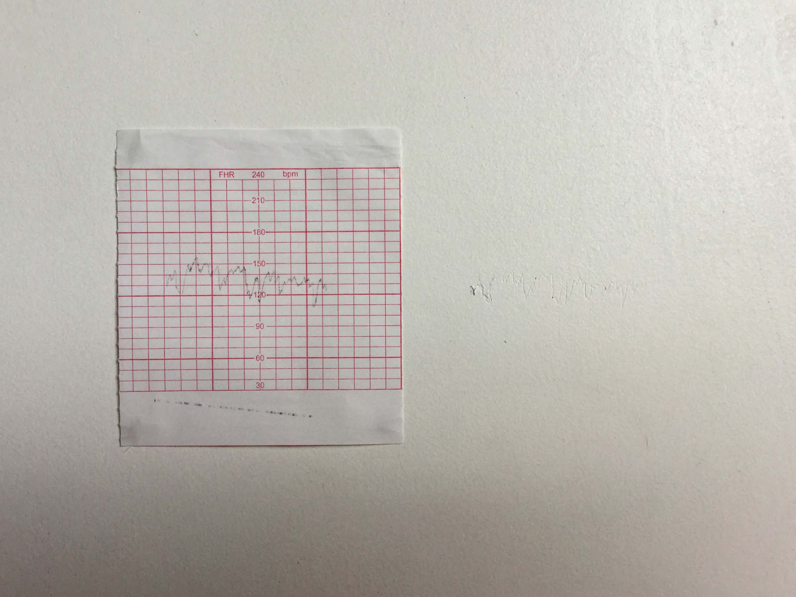

com que vibração esculpir um horizonte (with which vibration carve a horizon)

2015
configuração tríptica de impressão sobre papel térmico, inscrição sobre parede e áudio
(triptych configuration of: thermal paper printing, inscription on the wall and audio)
audio: https://soundcloud.com/ceciliacavalieri/com-que-vibracao-esculpir-um-horizonte
este trabalho é o registro térmico do nascimento da minha filha. o papel marca seus últimos batimentos cardíacos dentro de minha barriga e, o áudio, registra também os mesmos batimentos até o momento em que ela se precipita para fora de meu corpo, nascendo, depois de um suspiro.
[this work is the thermal record of my daughter's birth. the paper marks its last heartbeats inside my belly, and the audio also registers the same beats until the moment it rushes out of my body, being born, after a sigh.]